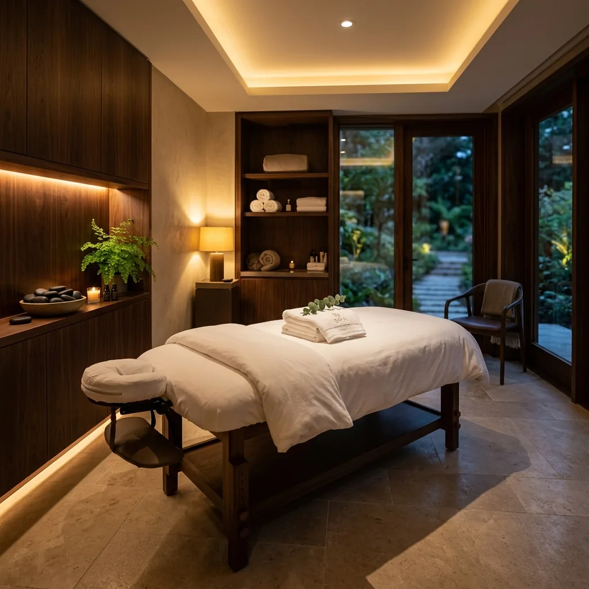
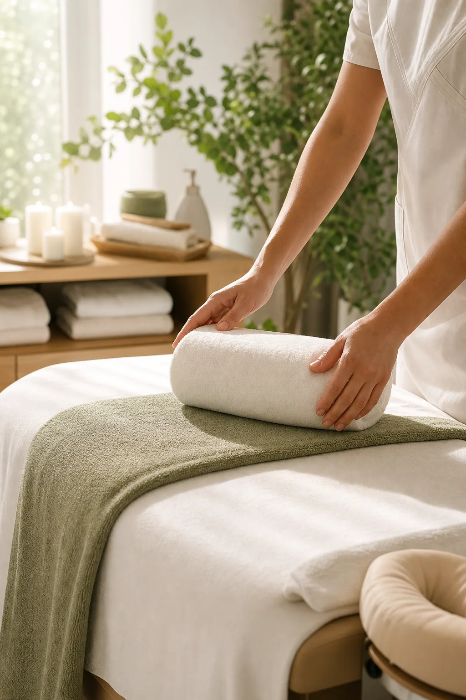
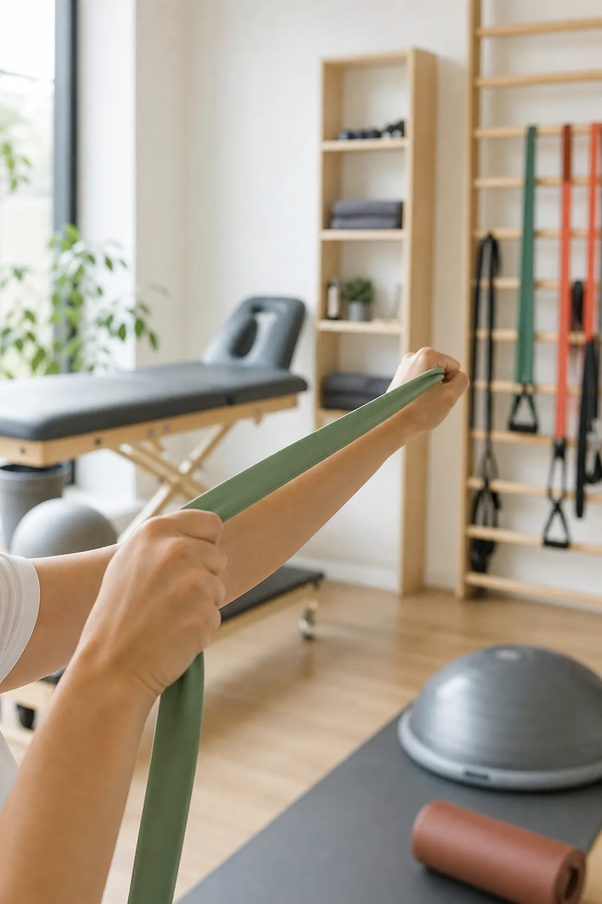
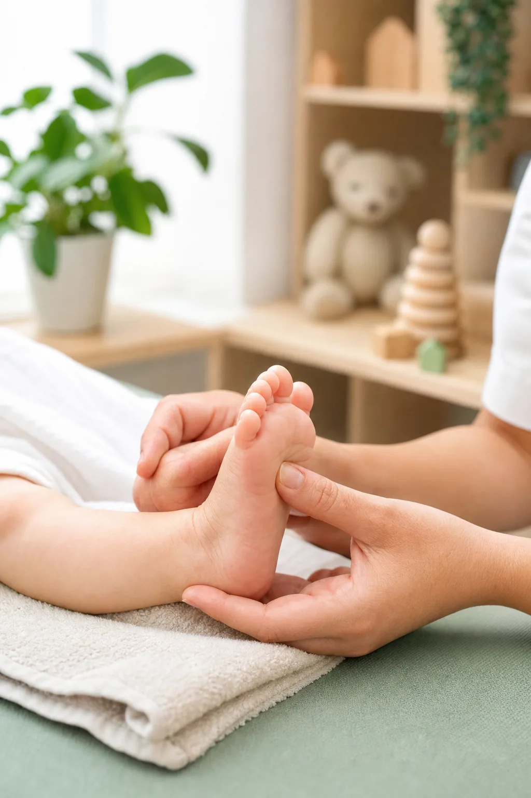

Кутаиси · массаж · реабилитация · детский массаж
Массаж в Кутаиси, реабилитация и детский массаж
Нино Абазадзе - массажист-реабилитолог в Кутаиси. Лечебный массаж, детский массаж и индивидуальный план восстановления по предварительной записи.


Кутаиси, Грузия
О специалисте
Нино Абазадзе - массажист-реабилитолог в Кутаиси
Моя цель — помочь вам восстановить физическое здоровье, подвижность и избавиться от боли. Я предлагаю индивидуальный медицинский подход, основанный на многолетнем практическом опыте.
Каждый визит начинается с оценки состояния. Процедура подбирается с учетом жалобы, возраста, нагрузки и цели восстановления.
Лечебный массажРеабилитацияДетский массаж
E-E-A-T
Надежный специалист, понятный процесс и реальная локация в Кутаиси
Для поисковых систем и пациентов важны опыт, прозрачная информация и надежные контакты. Сайт подчеркивает опыт Нино, локацию, услуги и простые способы записи.
Услуги
Реальные услуги для локального поиска
Лечебный массаж в Кутаиси
При напряжении спины, шеи, плеч и мышц лечебный массаж помогает расслабить тело и улучшить повседневное движение.
ЗаписьРеабилитация в Кутаиси
Оценка движения, постепенное возвращение к нагрузке и план восстановления после травмы, перегрузки или ограничения движения.
ЗаписьДетский массаж в Кутаиси
Мягкая работа с учетом возраста, настроения и потребностей ребенка, с понятной коммуникацией с родителями.
Запись
Премиальный подход
Цель - не только расслабление, но и лучшее качество движения и безопасное восстановление.

Локальный SEO
Когда нужен массажист или реабилитолог в Кутаиси?
Визит к Нино Абазадзе рекомендован при напряжении в спине и шее, мышечном дисбалансе или ограничении подвижности суставов. Каждая процедура направлена на облегчение боли и бережное восстановление естественных функций организма.
Мы также предлагаем детский массаж для гармоничного моторного развития ребенка. Кабинет расположен в районе Балахвани, по адресу ул. Ломоносова 2. Запись на сеансы ведется предварительно по телефону или через WhatsApp.
Процесс
Как проходит визит
Простой процесс от первого звонка до рекомендаций.
01
Запись
Уточняем жалобу, возраст, цель и время визита.
02
Оценка
Оценивается движение, нагрузка и причина дискомфорта.
03
Процедура
Интенсивность, техника и длительность подбираются под состояние.
04
Рекомендация
Вы получаете советы по частоте и уходу дома.
Вопросы
Частые вопросы о массаже, реабилитации и детском массаже в Кутаиси
Где записаться на массаж в Кутаиси?
Визиты проходят по предварительной записи: Кутаиси, Балахвани, Ломоносова 2.
Вы делаете детский массаж?
Да. Детский массаж подбирается с учетом возраста и потребностей ребенка.
Для чего нужна реабилитация?
Она помогает восстановить движение, переносимость нагрузки и функцию после перегрузки или травмы.
Начните восстановление сегодня - запишитесь на визит
+995 571 088 021Контакты